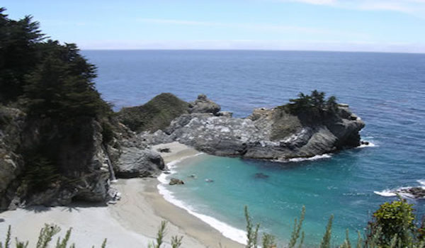

Activities at Pacific Trails
Hiking
Pacific Trails Resort has 5 miles of hiking trails and is adjacent to a
state park. Go it alone or join one of our guided hikes
Kayaking
Ocean kayaks are available for guest use.
Bird Watching
While anytime is a good time for bird watching at Pacific Trails, we
offer guided birdwatching trips at sunrise several times a week.